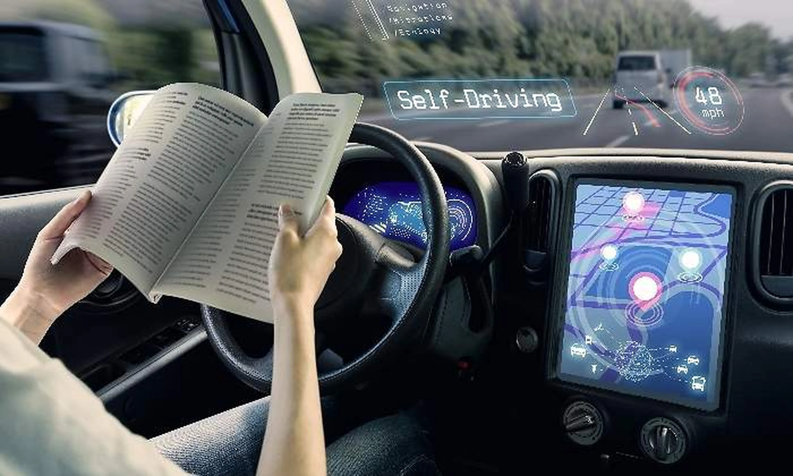

A día de hoy, la IA, va mucho más allá de su uso en grandes empresas. Veremos que nosotros mismos, en nuestro día a día estamos rodeados de ella. Algunos ejemplos son
-Asistentes virtuales como Siri, Alexa o Google Assistant son esas herramientas que en casa hacen la vida más fácil. A partir de algoritmos de aprendizaje automático, comprenden y responden a las preguntas y comandos de los usuarios. Están integrados en teléfonos, altavoces inteligentes, televisores y coches.

-Conducción autónoma: la combinación de sensores, algoritmos de aprendizaje automático y sistemas de toma de decisiones facilitan a los vehículos autónomos operar independientemente, sin la necesidad de una intervención humana directa. Lo que permite una percepción del entorno, la seguridad vial, el control automático del vehículo o la eficiencia y la comodidad.

-Medicina y salud: diagnóstico médico, investigación sobre nuevos fármacos, asistencia en cirugías, monitorización de pacientes ,gestión de registros médicos, proporciona un enfoque personalizado a la hora de establecer un tratamiento a un paciente, robótica quirúrgica que asisten a los cirujanos y minimizan los riesgos y las posibles complicaciones, etc.

-Servicios financieros: detecta fraudes, analiza grandes cantidades de datos financieros (transacciones, precios de acciones e información macroeconómica). También proporciona un asesoramiento financiero automático, a través de un roboadvisor.
-Agricultura: optimiza la producción agrícola mediante el análisis de datos climáticos, el monitoreo de cultivos, la gestión eficiente del agua de riego y la detección temprana de enfermedades en las plantas y así poder aplicar medidas contra las plagas antes de que sea demasiado tarde.
-Energía y sostenibilidad: predice patrones de demanda eléctrica, mejora la eficiencia energética y facilita la transición hacia fuentes de energía renovables.
-Traducción automática: es capaz de traducir textos (ya sean escritos u orales) de un idioma a otro de forma automática y rápida. Se utiliza en traductores online, aplicaciones móviles, traducción de contenido o en la comunicación global entre personas.
-Juegos y entretenimiento: se usa para crear personajes en videojuegos y entornos de realidad virtual con comportamientos realistas, genera música, sonido o cualquier otro tipo de arte.